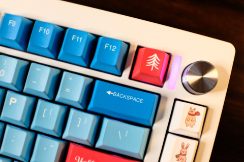

Blog
HƯỚNG DẪN SỬ DỤNG BÀN PHÍM ZUOYA LMK81
Cảm ơn các bạn đã lựa chọn Zuoya LMK81 - bàn phím cơ tuỳ chỉnh với khung nhôm CNC đi kèm với kết nối không dây 3 chế độ ngon nhất tầm giá 2 triệu hơn. Dưới đây là phần hướng dẫn sử dụng chiếc bàn phím LMK81 chi tiết nhất!
Khi không sử dụng, bàn phím sẽ tự động ngủ sau 5 phút. Để đánh thức, bạn chỉ cần gõ vào phím bất kỳ là được. Riêng với chế độ kết nối Bluetooth, chế độ ngủ sâu sẽ kích hoạt sau 30p không hoạt động. Bàn phím sẽ ngắt kết nối bluetooth với thiết bị ngoài. Tắt chế độ ngủ sâu này bằng cách bấm bất kỳ phím nào trên bàn phím nhé.